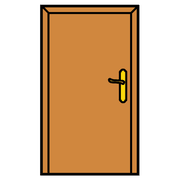
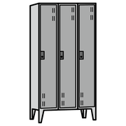
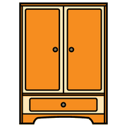

Secondo incontro, modulo 10
Simboli nello spazio
I simboli non vivono solo sulle tavole: stanno su porte, armadietti e angoli dell'aula, per rendere l'ambiente leggibile a tutti.
Da dove cominciare
Dalla routine di ogni giorno: meglio 5 simboli ben messi che 20 messi male.

porta bagno
bagno
armadietto angolo lettura
angolo lettura angolo gioco
angolo giocoIn un secondo momento: la luce, la finestra, l'angolo costruzioni, la zona del pranzo.
La pianta dell'aula
 classeporta
classeporta
armadioUna mappa dell'aula con i simboli al posto delle scritte: serve per orientarsi ed è un'attività da fare insieme, con i bambini che «disegnano» la loro aula. Basta una griglia semplice, da aggiornare nel tempo.
Gli stessi simboli
 uguale
uguale scuola
scuola casa
casaSe il simbolo del bagno sulla tavola è diverso da quello sulla porta, il bambino si confonde. Si stampano dallo stesso programma e con lo stesso stile.
Quali sono i 3 spazi o oggetti più usati nella tua sezione ogni giorno? Comincia da lì.un esercizio da fare subito